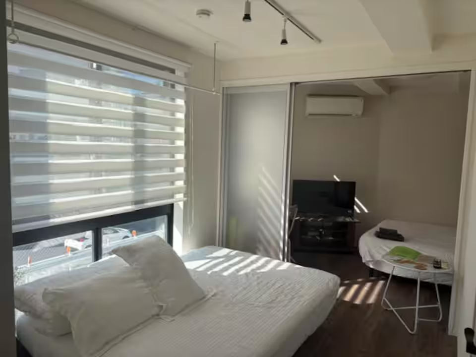

まず何を直す？
改善ポイントを3つ。
「1枚目を変える」「暗い写真を見直す」など、優先して直す点と、その理由・具体的な直し方をお伝えします。
民泊ホストのための無料写真診断
1枚目も、写真の順番も、明るさも。
担当者があなたの掲載写真を見て、
改善ポイントと理由をメールでお届けします。
掲載URLとメールアドレスで申込完了。無料・アカウント登録不要。
BEFORE / AFTER
明るさや色味、構図、小物の整理。
部屋の様子や滞在中の過ごし方が伝わるように、写真の見せ方を整えます。
無料診断でも、補正が役立つ写真を1組ご提案します。

室内の奥が暗く、置かれた小物に目が向きやすい状態。
明るさと構図を整え、部屋の様子が伝わる1枚へ。
光と色を整える奥のベッドや床まで見やすく。
見せ方を整える構図や小物を見直し、部屋に目が向く写真へ。
届いた写真を使える補正後の写真は、ご自身の物件の掲載ページで使用できます。
ご提供画像による仕上がり見本です。仕上がりは元写真の状態によって異なります。家具・設備・間取り・眺望など、実際の宿泊条件を変える加工はしません。撮り直しが適切な場合は、その理由をお伝えします。
YOUR PHOTO REPORT
担当者が掲載ページを確認し、
あなたの写真に合わせた改善案をまとめます。
まず何を直す？
「1枚目を変える」「暗い写真を見直す」など、優先して直す点と、その理由・具体的な直し方をお伝えします。
どの順番で見せる？
物件の魅力が伝わるカバー写真（1枚目の写真）と、その後に続ける写真をご提案。なぜその順番なのかも解説します。
どのくらい変わる？
補正が役立つ写真には、Before／Afterを添えてご提案。届いた補正後の写真は、そのまま掲載にお使いいただけます。
改善案と掲載順は、申込から通常3営業日以内にメールで。
補正に元写真が必要な場合は、受付後にメールでご連絡します。補正画像は元写真を受け取ってから、通常3営業日以内に追加でお届けします（土日祝を除く）。
以下は架空の物件とAI生成画像による例です。上のBefore／Afterとは別の物件で、実際の過去事例・お客様の成果ではありません。
ホストブースト ／ 写真の見せ方レポート
想定：リビング・寝室・キッチンのある民泊物件（掲載順・改善案の抜粋）
掲載順の提案
部屋全体、寝室、使える設備の順に写真を見せ、宿泊前の疑問に答えます。
1 玄関→2 キッチン→3 寝室→4 リビング
この物件なら、最初の3枚をこう提案します ↓
理由 くつろぐ空間と部屋の雰囲気が、1枚で伝わるから。一覧に表示される小さな写真でも、部屋の様子がわかるものを選びます。
理由 ベッドの台数と配置を確認でき、誰とどう泊まるかを具体的に想像しやすくなるからです。
理由 調理スペースや冷蔵庫などが見えると、食事や連泊の過ごし方を判断しやすくなるからです。
※すべての物件に同じ順番を当てはめません。眺望や露天風呂など、物件の特徴・写真の見やすさに応じて提案します。
実際にやること
担当者があなたの掲載ページを見て、物件に合わせてご提案します。
掲載写真の改善ポイントと、その理由をお届けします。
HOW IT WORKS
Airbnbの掲載URLと、レポートを受け取るメールアドレスを入力。申込時の写真アップロードは不要です。
カバー写真、掲載順、見せ方を確認します。補正に元写真が必要な場合は、メールで送付をお願いします。
申込から通常3営業日以内に、改善ポイントと掲載順をメールでお届けします。補正に元写真が必要な場合は、元写真を受け取ってから通常3営業日以内に補正画像を追加でお届けします（土日祝を除く）。
BEFORE YOU APPLY
改善ポイント3つ、最初の3枚の掲載順と理由、補正が役立つ写真1組のご提案まで無料です。カード登録は不要で、自動で課金されることはありません。
複数枚の補正画像や全写真の詳しい掲載順をご希望の場合は、内容と料金に合意してから進めます。
掲載URLとメールアドレスだけでお申し込みいただけます。担当者が掲載ページを開き、写真を確認します。
補正に元写真が必要な場合は、受付後にメールでご連絡します。そのメールへの返信で元写真をお送りください。URLから写真を自動収集することはありません。
改善案と掲載順は、申込から通常3営業日以内にメールでお届けします。補正に元写真が必要な場合は、メールでご連絡します。元写真を受け取ってから、通常3営業日以内に補正画像を追加でお届けします。いずれも土日祝を除きます。
お届けした補正後の写真は、ご自身の物件の掲載ページでそのままお使いいただけます。元写真の状態によっては、補正より撮り直しが適切な場合もあります。その際は理由と撮り方をご提案します。
明るさ・色味・構図や小物の整理など、部屋の魅力を伝える補正を行います。家具・設備・間取り・眺望など、実際の宿泊条件を変える加工はしません。予約率の向上を保証するものではありません。
FREE PHOTO REVIEW
掲載URLとメールアドレスで申込完了。
担当者が物件に合わせて、理由付きの改善案をお届けします。
THANK YOU
掲載写真を担当者が確認し、
改善ポイントとその理由をメールでお届けします。
改善案と掲載順は、申込から通常3営業日以内にメールでお届けします（土日祝を除く）。
補正に元写真が必要な場合は、メールでご連絡します。元写真を受け取ってから通常3営業日以内に、補正画像を追加でお届けします（土日祝を除く）。
結果が届かない場合は、迷惑メールフォルダをご確認ください。見つからない場合は、受付番号を添えてお問い合わせください。
PHOTO TOOLS
レポートを待つ間に使える、明るさ・色味の簡易調整ツールです。
操作や写真の追加は任意です。診断・補正のご提案は担当者からメールでお届けします。
STEP 1 Airbnbの掲載URLを入力 どの物件か確認するために使います
STEP 2
掲載URLから写真は取り込みません。手元の写真を選ぶと、この端末内で見やすさの目安を確認できます。明るさや色味の調整もできます。画像はサーバーへ送信されません。
02 PHOTO REPORT
部屋の種類と写真の見やすさをもとに、掲載順を提案します。順番は自由に変更できます。
実物の印象を変えない範囲で調整します。
お預かりする掲載URL・メールアドレス・ご相談内容は、写真診断に利用します。受付確認メールや診断結果の送付、診断に必要なご連絡にも利用します。広告メールの配信には利用しません。
申込情報は、メール送信サービスResendを通じて運営者に送信されます。受付確認メールは、ご入力のメールアドレスへ送信されます。
申込情報は診断対応に必要な範囲で取り扱い、不要になった情報は削除します。削除のご依頼は上記へご連絡ください。
YOUR NEXT FIRST IMPRESSION
掲載URLとメールアドレスで申し込み。改善案は通常3営業日以内に。